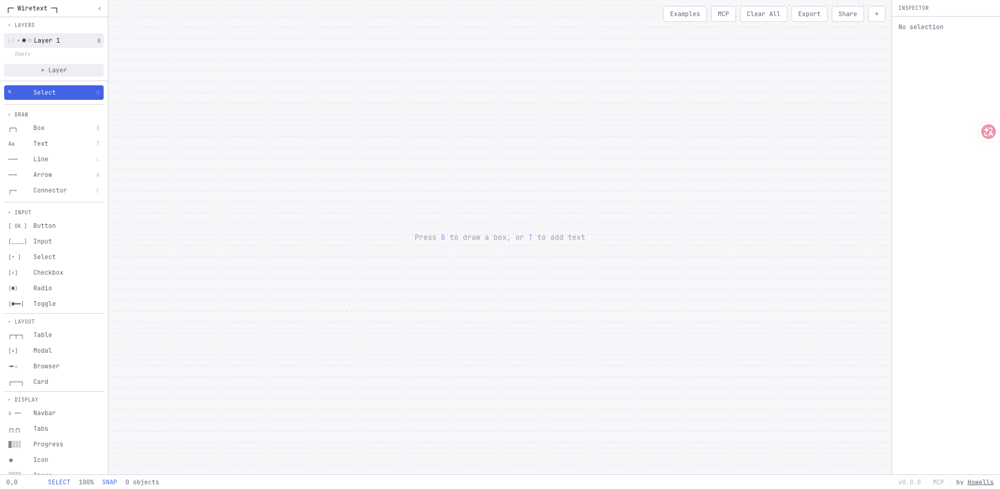

用制表符画线框 —— 每个框、每条线都是一个可复制、可粘贴、可进 Git 的字符。
下面不是图片，是一段 Unicode 字符；点「源码 / 渲染」看它是同一串字符
┌─────────────────────────────────────────────────┐ │ ACME 控制台 │ ├─────────────────────────────────────────────────┤ │ │ │ ┌───────────────────────────────────────────┐ │ │ │ 登录 ACME │ │ │ ├───────────────────────────────────────────┤ │ │ │ │ │ │ │邮箱 │ │ │ │[ 邮箱 ] │ │ │ │ │ │ │ │密码 │ │ │ │[ 密码 ] │ │ │ │ │ │ │ │[ ] 记住我 忘记密码? │ │ │ │ │ │ │ │ [ 登录 ] │ │ │ │ │ │ │ └───────────────────────────────────────────┘ │ │ │ └─────────────────────────────────────────────────┘
╭─ 标题栏 ──────────────────────────────────────╮ │ ● ● ● acme.dev/login │ ├───────────────────────────────────────────────┤ │ │ │ ┌─────────────────────────────────────────┐ │ │ │ACME │ │ │ │─────────────────────────────────── │ │ │ │ │ │ │ │邮箱 │ │ │ │[ 邮箱 ] │ │ │ │ │ │ │ │密码 │ │ │ │[ 密码 ] │ │ │ │ │ │ │ │[ 登录 ] │ │ │ └─────────────────────────────────────────┘ │ │ │ ╰───────────────────────────────────────────────╯
Wiretext 的视觉语言就是没有视觉语言：纯等宽字体、单色、零装饰，所有形状由 ┌─┐│└┘ 这类制表符拼出来，圆角窗口用 ╭╮╰╯。好处是它粘贴到哪里都不会变形 —— 终端、代码注释、issue、AI 的上下文窗口。

一个把线框稿表达为纯文本的编辑器。你画的每个框、每条线、每个输入框，底层都是一串 box-drawing 字符，导出就是 .txt。它提供快捷键、组件库和 MCP server —— 后者意味着 AI agent 可以直接读写这份线框稿。
产物可以是线框图，也可以是组件清单、状态图、简单的系统框图。约束只有一条：只用字符能表达的东西。